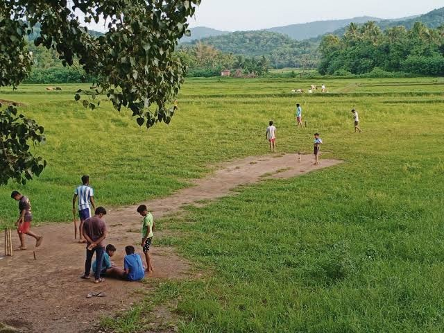

വേനലവധി ക്രിക്കറ്റായിരുന്നു… സച്ചിന്റെ ക്രിക്കറ്റ്!
ഏപ്രിൽ മെയ് മാസങ്ങളിലെ ഓരോ സൂര്യോദയവും ക്രിക്കറ്റിനുവേണ്ടി മാത്രമുള്ളതായിരുന്നു.
കളി തലയ്ക്കു പിടിച്ച നാളുകളിലെ സ്വപ്നങ്ങളിൽ പോലും ക്രിക്കറ്റ് ആയിരുന്നു.
ഏഴു രൂപയുടെ നീല സ്റ്റമ്പർ ബോൾ. പെട്ടെന്നു പൊട്ടാതിരിക്കാൻ അതിലിട്ട സൂചിപ്പഞ്ചർ.
ചീകിമിനുക്കിയ തടി ബാറ്റിൽ സ്കെച്ച് പേനകൊണ്ടെഴുതിയ ആ മൂന്നക്ഷരങ്ങൾ – M R F
സ്ഥലപരിമിതികൾ പുതുക്കിയെഴുതിയ നാടൻ ക്രിക്കറ്റ് നിയമങ്ങൾ.
അവിടെ LBW നു സ്ഥാനമില്ലായിരുന്നു.. സിക്സറുകൾ നിയന്ത്രിക്കപ്പെട്ടിരുന്നു…
ആദ്യം ബാറ്റ് ചെയ്തവന് ആദ്യം ബോൾ ചെയ്യാനുള്ള അവകാശം നിഷേധിക്കപ്പെട്ടിരുന്നു.
വലം കൈയ്യൻമാർക്കുവേണ്ടി മാത്രം ഒരുക്കിയ പിച്ചുകളിൽ ബാറ്റ് ചെയ്യാൻ നന്നേ വിഷമിച്ച ഒരു ഇടം കൈയ്യൻ എല്ലാ കൂട്ടത്തിലും ഉണ്ടായിരുന്നു. കുട്ടിക്കാട്ടിലും മതിലിനപ്പുറവും പൊങ്ങിപ്പോവാതെ അവൻ നേടിയ ബൌണ്ടറികളായിരുന്നു യഥാർത്ഥ ബാറ്റിംഗ് സ്കിൽ.
എല്ലായിടത്തും ഉണ്ടായിരുന്നു ഒരു ‘മാങ്ങയേറ്’ കാരനും ഒരു ‘പിണകൈ’യ്യനും..
പിന്നെ ബോളിങ്ങ് എൻഡിലെ ഒറ്റക്കുറ്റിയിൽ എപ്പോളും കൃത്യമായി എറിഞ്ഞു കൊള്ളിക്കുന്ന ഒരുവൻ, ഔട്ടായാലും സമ്മതിച്ചു തരാത്ത ഒരുവൻ, എല്ലാ ഓവറിലും ഒരു ബോൾ കുറച്ച് എറിഞ്ഞിട്ട് അതിനുവേണ്ടി തർക്കിക്കുന്ന ഒരുവൻ.
സ്വന്തം ടീമിന്റെ ക്യാച്ച് മനപ്പൂർവം വിട്ടുകളയുന്ന വിക്കറ്റ് കീപ്പർ.. അത് ബാറ്റിൽ കൊണ്ടില്ലെന്ന് വരുത്താൻ ബാറ്റിന്റെ പിടി കുലുക്കി സൌണ്ട് കേൾപ്പിക്കുന്ന ബാറ്റ്സ്മാൻ..
ഇവൻ എങ്ങനേലും ഔട്ടാവണേ ന്നു പ്രാർത്ഥിക്കുന്ന അടുത്തവൻ..
വിജയത്തിനരികെ ക്രീസിൽ ‘തുഴച്ചിൽ’ നടക്കുമ്പോൾ “സ്റ്റമ്പേട്ടടിച്ച് ഔട്ടാകെടാ” എന്ന് ആക്രോശിക്കുന്ന ടീമംഗങ്ങൾ..
ലാസ്റ്റ് ബോളിൽ സിംഗിളെടുത്താൽ ഞാനെങ്ങും ഓടില്ല എന്നു പറഞ്ഞ് ബാറ്റിൽ കുത്തിയിരിക്കുന്ന നോൺസ്റ്റ്രൈക്കർ..
ക്യാമറകൾ ഒപ്പിയെടുക്കാതെ പോയ ഫീൽഡിംഗ് പാടവങ്ങൾ, ഡൈവിംഗ് ക്യാച്ചുകൾ..
തർക്കങ്ങൾ പലതും റണ്ണൌട്ടുകളെ ചൊല്ലിയായിരുന്നു.
ഒരുമാതിരിപ്പെട്ട ഔട്ടുകളൊന്നും സമ്മതിച്ചുകൊടുത്ത ചരിത്രമില്ല!
തർക്കിക്കുന്ന സമയത്ത് ടീമിലെ ‘സത്യസന്ധൻ’ തെണ്ടിയോ പുറത്തുനിന്നൊരാളോ ഔട്ടിനെ അനുകൂലിച്ചാൽ പിന്നെ മാറിക്കൊടുക്കാതെ നിവൃത്തിയില്ല.
മഴപെയ്തു ചെളിഞ്ഞ പിച്ചുകൾ വൃത്തിയാക്കുന്നതിൽ കാണിച്ചിട്ടുള്ള ആത്മാർത്ഥത വേറൊരു ജോലിയിലും കാണിച്ചിട്ടില്ല.
വീട്ടിൽ നിന്നും കടയിൽ പറഞ്ഞുവിട്ട വൈകുന്നേരങ്ങൾ ഇരുട്ടുംവരെ ആഘോഷിച്ചത് ആ പറമ്പുകളിലായിരുന്നു.
ബാറ്റിംഗ് കഴിഞ്ഞ് കടയിൽ പോണം എന്നുംപറഞ്ഞു ഫീൽഡ് ചെയ്യാതെ മുങ്ങുന്ന വിരുതൻമാരും ഉണ്ടായിരുന്നു.
സ്റ്റമ്പർ ബോളുകൾ തകർത്ത ജനൽചില്ലുകൾ പലപ്പോഴും പിറ്റേ ദിവസത്തെ കളിയും മുടക്കിയിട്ടുണ്ട്.
പന്ത് മതിലിനകത്തേക്ക് ഉയർന്നു പൊങ്ങുമ്പോളേ പറമ്പ് കാലിയാകും. പലരും ഓടി വീടെത്തിയിട്ടുണ്ടാവും.
ബൌണ്ടറി ലൈനിൽ നിന്നും ക്യാച്ചെടുത്തിട്ട് മുന്നോട്ടു കയറി ഫ്രീസായി നിന്നു കാണിക്കൽ, സിക്സാണെന്ന് കാണിക്കാൻ ആരുടെയോ കാല്പാടു കാട്ടി ബോൾ കുത്തിയ പാടാണെന്ന് വരുത്തിത്തീർക്കൽ.. ഇതൊക്കെ അന്നത്തെ സ്ഥിരം കലാപരിപാടികളിൽ ചിലതുമാത്രമായിരുന്നു.
വെയിലും മഴയും തളർത്താത്ത ആവേശം നിറഞ്ഞ പോരാട്ടങ്ങൾക്കു പലദിവസങ്ങളിലും തിരശീലയിടുന്നത് കുറ്റിക്കാടുകളിലും മതിലകങ്ങളിലും പോയി ഒളിച്ചിരിക്കുന്ന ബോളുകൾ ആയിരിക്കും. അതും നമ്മളൊന്ന് ഫോമായി വരുമ്പോ.
ബാല്യം നൊസ്റ്റാൾജിയയുടെ പര്യായമാണ്.
ഓർമ്മകളിൽ പച്ചവിരിച്ചു നിന്ന പറമ്പുകളിൽ പലതും ഇന്ന് നാമാവശേഷമായി.
മണ്ണിനുമീതെ കെട്ടിടങ്ങളുയർന്നപ്പോൾ ആ സ്മാരകങ്ങൾ ഓർമ്മകളായി.
പക്ഷേ, ഓർമ്മകൾക്ക് മരണമില്ലല്ല്ലോ..
ഏതു വേനലിലും ഹൃദയത്തിന്റെ അടിത്തട്ടിൽ അവയങ്ങനെ പൂത്തു തളിർത്തു നിൽക്കും!
DeOn